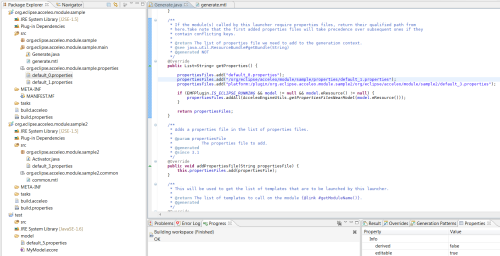
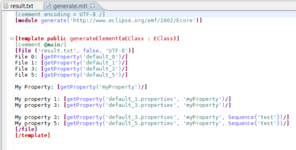
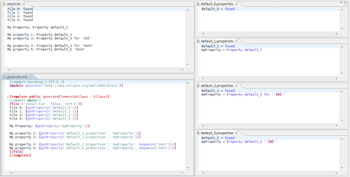

Add properties files to your generator
Properties files are standard Java ".properties" files that can be loaded by an Acceleo generator to customize a generation.
In order to use a properties file in your generator, you have to reference it in the method "getProperties()" of your Java
launcher and then to use the loaded properties in your generator.
In the method "getProperties()", you have to return a collection of the path of the properties files that you want to use.
There are four ways to referenced a properties files:

-
You can just return the name of the properties files, example: "default_0.properties". With this, Acceleo will look for
any file named default_0.properties in the generator and load the properties from the first file found with this name.
-
You can also enter the path of a specific properties file located in your generator, example: "/org/eclipse/acceleo/module/sample/properties/default_1.properties".
With this path, Acceleo will look for a properties files with the name "default_1.properties" in the folder
"/org/eclipse/acceleo/module/sample/properties/" in your generator.
-
You can also referenced a properties files located in another Eclipse plugin by using the url of the properties files in
the other plugin. In order to do that, you need to construct the path with the following convention: "platform:/plugin//".
Example: "platform:/plugin/org.eclipse.module.sample2/org/eclipse/acceleo/module/sample2/default_3.properties". The other
plugin needs to be deployed in Eclipse or it needs to be a dependency of the first generator.
-
Finally, you can also use an absolute path in the filesystem as a reference to a properties file. Example: "C:\Users\sbegaudeau\Desktop\default_4.properties".
You can also use the utility method org.eclipse.acceleo.engine.utils.AcceleoEngineUtils#getPropertiesFilesNearModel to compute
the absolute path of the properties files in the same folder as the model. With this method, we can have the path of the file
default_5.properties.
In order to use a properties files located in an Eclipse plugin (all Acceleo generators are Eclipse plugins) you have to make sure
that the file is included in the build of your generator, by either placing it in a source folder or by adding it to your build in
the build.properties file located at the root of your generator.
Use the values from the properties files loaded
Now that you know how to load a properties file, you need to use it in your generator. In order to do that, you can use one of the
four following operations:

-
"getProperty('myProperty')" will return the value of the property with the key "myProperty". Several properties files can have
properties that share the same key, only the first one found will be returned with this method.
-
"getProperty('default_1.properties', 'myProperty')" will return the value of the property with the key "myProperty" from the file
"default_1.properties").
-
"getProperty('myProperty', Sequence{'my name'})" will return the value of the property with the key "myProperty" parameterized
with the value in the sequence.
-
"getProperty('default_3.properties', 'myProperty', Sequence{'my name'})" will return the value of the property with the key
"myProperty" parameterized with the value in the sequence from the file "default_3.properties".
You can see the result of the generation in the following screenshot.



{kind=link}
{kind=link}
{kind=link}